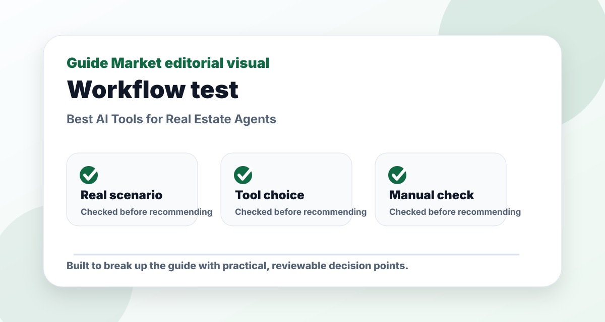
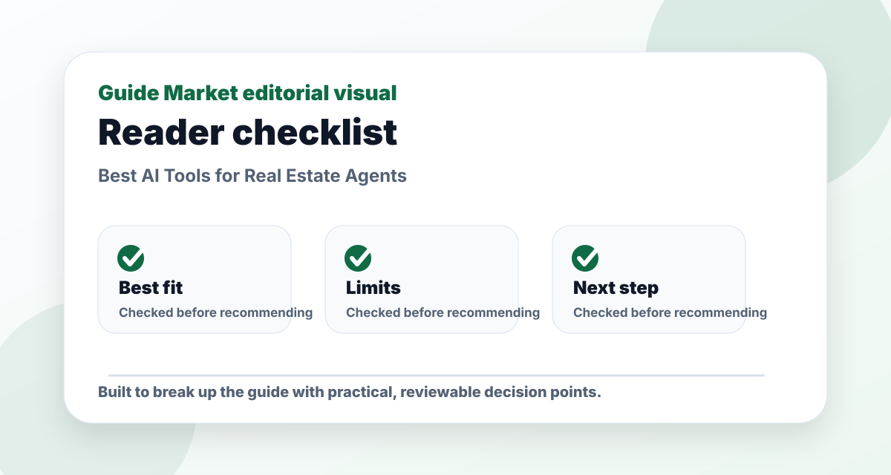
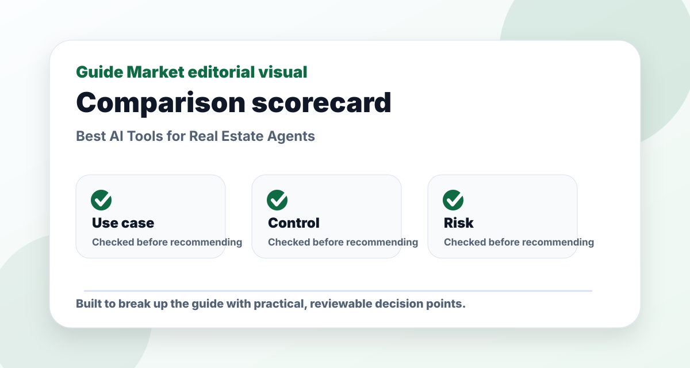

Best AI Tools for Real Estate Agents
Published May 12, 2026. Last updated May 24, 2026. Estimated reading time: 9 minutes.
This guide compares ChatGPT, Canva, Matterport, Zillow for readers who want a practical answer, not just a list of software names. The focus is making listings clearer, faster, and more persuasive without exaggerating property claims.




The real problem this guide solves
This guide is not meant to be a quick list of names. The real problem is choosing real estate agents tools that solve a real task instead of adding another unused subscription. That requires context: what the reader is trying to do, what can go wrong, and which option is useful after the first impressive demo.
I evaluate ChatGPT, Canva, Matterport, Zillow through a practical lens: how easy they are to start, how much control they give you, what must be verified manually, and whether they still make sense after the novelty fades. A recommendation only matters if it survives a realistic task.
Practical comparison criteria
| Criterion | What it reveals | How to test it |
|---|---|---|
| Use-case fit | Whether the option solves the actual job, not a generic version of it. | Test it with this scenario: a reader using real estate agents tools on one realistic project and comparing the output side by side. |
| Control | Whether you can edit, verify, export, or adapt the result. | Try to change the output without starting from zero. |
| Reliability | Whether the recommendation remains useful when facts, prices, or constraints change. | Check the official source and compare with at least one alternative. |
| Long-term value | Whether the workflow will be used repeatedly. | Ask if it saves time next week, not only today. |
Pros and cons
Pros
- Gives a clearer starting point for a messy decision.
- Helps compare options using the same real-world scenario.
- Creates a repeatable workflow instead of a one-off answer.
Cons
- Still requires manual verification and judgment.
- Free plans or public information may be limited or outdated.
- Choosing too many options can create more work, not less.
Editorial verdict
I would use Canva for visuals, ChatGPT for copy drafts, Matterport for premium listings, and Zillow resources for marketplace context. The best choice depends on the bottleneck: planning, production, review, publishing, or measurement. I would not choose a tool only because the demo looks futuristic; I would choose the one that removes a real weekly task.
Quick picks
- Best listing copy and follow-up drafts: ChatGPT
- Best listing graphics and flyers: Canva
- Best 3D virtual tours: Matterport
- Best marketplace visibility context: Zillow
Comparison table
| Tool | Best for | Avoid if | Learning curve |
|---|---|---|---|
| ChatGPT Official site | Best listing copy and follow-up drafts | Avoid if compliance review is skipped | Easy |
| Canva Official site | Best listing graphics and flyers | Avoid if you need MLS-native publishing | Medium |
| Matterport Official site | Best 3D virtual tours | Avoid if budget or capture workflow is too heavy | Medium |
| Zillow Official site | Best marketplace visibility context | Avoid if you need full CRM automation | Easy |
My 30-minute test
For this category, I would run a practical 30-minute test before paying for anything. I would create one real task, use each tool on the same input, and judge the output by usefulness rather than novelty. For real estate agents, that means checking whether the tool helps with making listings clearer, faster, and more persuasive without exaggerating property claims. A tool that saves ten minutes but creates twenty minutes of checking is not actually saving time.
The test should include one messy input, one revision, and one final export. Messy inputs reveal whether the tool can handle reality. Revision shows whether you remain in control. Export matters because many AI products look good inside their own interface but become awkward when you move the result into your real workflow.
Example prompt
Use this starting prompt: “I need help with making listings clearer, faster, and more persuasive without exaggerating property claims. My audience is [audience], my constraints are [budget/time/tools], and the final output should be [format]. Ask me three clarifying questions before giving the final answer.” This works because it slows the tool down and gives it a real target.
After the first answer, ask: “What assumptions did you make, what should I verify, and what would you change if the audience were more skeptical?” Those follow-up questions are often more valuable than the first output because they reveal weak spots before you publish, send, buy, or rely on the result.
What I would actually use
If I had to choose today, I would start with the tool that fits the highest-frequency task. Most people choose software for the exciting once-a-month use case and then ignore the boring daily one. That is backwards. The daily task is where AI either becomes valuable or disappears from your routine.
For beginners, I would pick the simplest tool that creates a finished result in one sitting. For advanced users, I would choose based on control, integrations, and review speed. For teams, I would also check permissions, data policies, collaboration, and whether the output can be audited later.
Tool-by-tool notes
ChatGPT: Best listing copy and follow-up drafts. I would use it when that strength matches the job directly. Avoid if compliance review is skipped. The important question is not whether ChatGPT can produce something impressive, but whether it fits the way you already work when deadlines, edits, and real constraints appear.
Canva: Best listing graphics and flyers. I would use it when that strength matches the job directly. Avoid if you need MLS-native publishing. The important question is not whether Canva can produce something impressive, but whether it fits the way you already work when deadlines, edits, and real constraints appear.
Matterport: Best 3D virtual tours. I would use it when that strength matches the job directly. Avoid if budget or capture workflow is too heavy. The important question is not whether Matterport can produce something impressive, but whether it fits the way you already work when deadlines, edits, and real constraints appear.
Zillow: Best marketplace visibility context. I would use it when that strength matches the job directly. Avoid if you need full CRM automation. The important question is not whether Zillow can produce something impressive, but whether it fits the way you already work when deadlines, edits, and real constraints appear.
Free vs paid
Use the free plan or trial to learn the workflow, not to make a permanent decision. A paid plan makes sense only when you can name the exact limitation you are paying to remove: more exports, better models, brand controls, collaboration, history, integrations, or higher usage limits. If you cannot name that limitation, wait.
For many readers, the smartest stack is one specialist tool plus one general assistant. The specialist handles the repeatable part of the work. The general assistant helps you think, rewrite, compare, and plan around it. Paying for four overlapping tools usually creates more friction than value.
Common mistakes
The first mistake is accepting the first output. AI often produces a smooth first draft that hides weak assumptions. Ask for alternatives, ask what might be wrong, and compare the answer against real examples. The second mistake is ignoring verification. Any claim involving pricing, policy, legal risk, health, money, technical behavior, or platform rules should be checked on an official source.
The third mistake is copying the generic AI voice. Readers, customers, students, and clients notice when every sentence sounds polished but empty. Add your own examples, numbers, constraints, and decisions. The fourth mistake is using the tool for everything. Good workflows have boundaries: AI drafts, humans decide, and important details get verified.
Best workflow
A practical workflow has five steps. First, define the job in one sentence. Second, collect the real inputs: notes, goals, audience, files, examples, and constraints. Third, ask the AI for a draft or structured plan. Fourth, revise the output against your own standard. Fifth, save the repeatable parts as a template for next time.
For real estate agents, I would also keep a checklist of what the AI is not allowed to decide alone. That might include final facts, compliance claims, customer promises, published pricing, brand-sensitive language, or technical changes. The best AI workflow is fast, but it is not careless.
Who should avoid these tools
Some people should delay buying. If you do the task once a year, a subscription may not be worth it. If your team has no review process, AI can multiply mistakes. If the task involves sensitive data, check privacy and compliance first. If you are still learning the basics of the field, use AI for feedback and examples rather than outsourcing the core skill.
AI is most useful when you already understand the goal. It is less useful when you hope the software will define the goal for you. A clear human brief still beats a vague prompt.
Final recommendation
My recommendation is to start small, test with a real task, and choose the tool that survives revision. Shiny demos matter less than repeatable output. The winner is the tool you can use on a busy day without babysitting every sentence, file, or suggestion.
For most readers, I would choose one primary tool from this list and pair it with a careful review habit. That combination produces better results than chasing every new AI launch. The market will keep changing, but the evaluation method stays useful: fit, control, verification, cost, and repeatability.
Real estate workflow
Real estate AI should make listings clearer, not more exaggerated. For property descriptions, I would ask AI to rewrite factual notes into buyer-friendly language while preserving every factual constraint. Do not let the tool invent upgrades, neighborhood claims, school quality, square footage, views, or investment potential. Those details need verification and compliance review.
For marketing, use AI to create variants by buyer type: first-time buyer, downsizer, investor, remote worker, family, or luxury buyer. Each version should emphasize different benefits while staying accurate. Canva can turn those messages into flyers, social posts, and open-house materials. Matterport or virtual tour tools can help serious buyers understand layout before visiting.
For follow-up, AI can draft messages after showings, but the agent should personalize them based on the conversation. A strong follow-up mentions the specific property, the buyer concern, the next step, and a useful resource. Weak AI follow-up sounds like a newsletter. Real estate is trust-heavy, so personalization matters more than automation volume.
Compliance and trust checks
Real estate content needs more caution than ordinary marketing copy. A property description should be attractive, but it must not invent facts or make claims that the agent cannot support. I would create a checklist for every AI-generated listing: factual features, measurements, neighborhood claims, school claims, renovation status, accessibility, pricing language, and fair housing sensitivity.
For social media, use AI to create educational posts that help buyers and sellers understand the process: inspection basics, staging tips, mortgage questions to ask, open-house preparation, and common mistakes. Those posts can build trust without exaggerating a specific listing. Canva can then turn them into consistent visuals.
The best real estate AI workflow is local and specific. Generic national advice rarely beats knowledge of the neighborhood, building type, commute patterns, seasonal demand, and buyer concerns. Use AI to package local expertise, not replace it.
Decision checklist before choosing
Before choosing a tool from this list, write down the exact job you want it to perform this week. Keep the sentence concrete. For Best AI Tools for Real Estate Agents, that job might be creating one finished asset, improving one workflow, reducing one repetitive task, or making one decision easier. If the job cannot be described in one sentence, the tool comparison will feel confusing because every feature will look useful.
Next, define what a good result looks like. A good result should include quality, speed, control, and review. Quality means the output is actually usable. Speed means the tool saves time after revision, not only during the first draft. Control means you can edit the result without fighting the software. Review means you can check facts, claims, sources, files, or customer-facing details before publishing. These four criteria are more useful than a generic star rating because they match real work.
Then run a small paid-plan test before committing long term. Use one real project, not a toy example. Save the input, output, editing time, and final result. If the tool makes you faster but lowers quality, it may be useful only for drafts. If it improves quality but requires too much setup, it may be a specialist tool rather than a daily tool. If it improves both speed and quality, it is worth considering seriously.
Finally, think about the human skill behind the tool. In Business, AI can accelerate production, but it does not remove the need for taste, judgment, ethics, and context. The more public or important the final output is, the more careful the review should be. I would rather use one AI tool with a clear review process than five tools that produce more material than I can inspect. That is the difference between leverage and clutter.
The best long-term choice is usually boring in a good way. It fits your workflow, respects your constraints, gives you editable output, and keeps working after the first exciting demo. If a tool only feels impressive when everything is perfect, it may not survive a busy week. Choose the tool that helps when the input is messy, the deadline is real, and the final result has to be good enough for another person to use.
FAQs
What is the best option for beginners?
The best beginner option is usually the one that solves one clear task with the least setup. Start with a free or simple workflow before paying.
Are paid plans worth it?
Only when the paid feature removes a real limit such as exports, collaboration, higher usage, integrations, or better control.
Can these tools replace human review?
No. They can speed up drafting and comparison, but important facts, public content, schoolwork, business decisions, and financial details still need review.
How do I avoid generic results?
Use a specific brief with goal, audience, constraints, examples, and the format you want. Then ask the tool to revise against clear criteria.